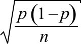

95% bounds on the estimation error
When sample proportion p is used to estimate a corresponding population proportion, π, the resulting error has the approximate distribution,
error = p − π ~ normal (0,  )
)
Replacing π by our best estimate, p, and using the properties of the normal distribution, we can therefore write
Prob( error is between ± 2 ) ≈ 0.95
The value 1.96 could be used instead of 2 in this equation since exactly 95% of values from a normal distribution are within 1.96 standard deviations of the mean. However this refinement does not help because:
Rice survey
An earlier example described usage of different rice varieties by a sample of 36 farmers in Sri Lanka. The proportion using 'Old' varieties was p = 17/36 = 0.472 and this provides a point estimate of the proportion, π, of farmers using these varieties in the whole region.
The diagram below shows our estimated normal distribution for the errors and approximate 95% bounds on the error.
95% confidence interval
Since there is a probability of approximately 0.95 that p is within 2 × of π, a 95% confidence interval for π is...
Rice survey
A 95% confidence interval for the population proportion of farmers using 'Old' varieties of rice is therefore
0.472 ± 0.166
i.e. 0.306 to 0.638
We are therefore 95% confident that between 30.6% and 63.8% of farmers in the region are using 'Old' rice varieties.
A sample of only 36 farmers is clearly too small to accurately estimate the population proportion.